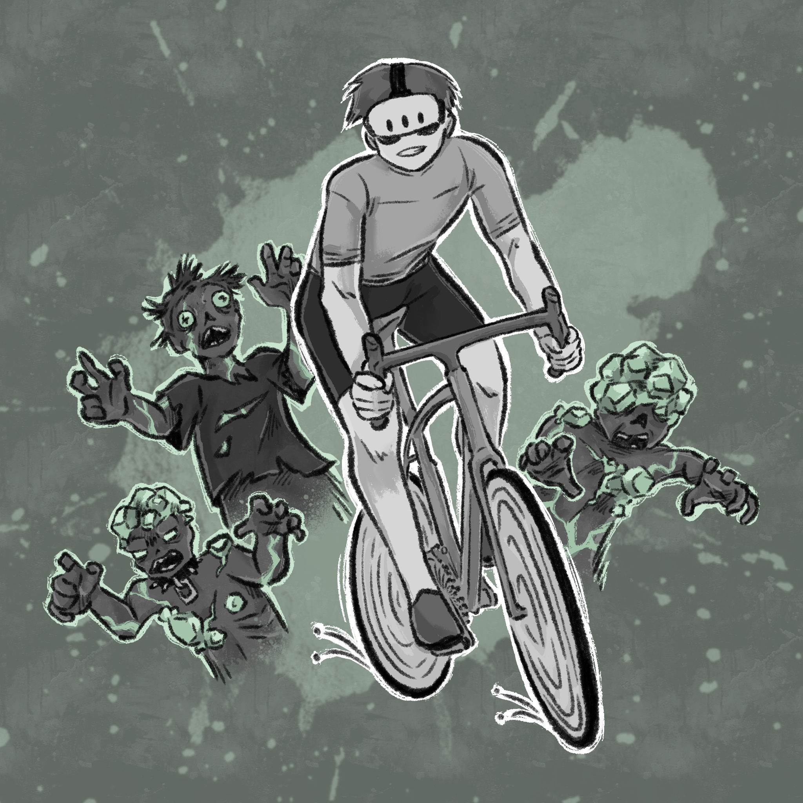

Master Student · International Media Computer Science · Berlin

Wasteland Courier is a post-apocalyptic VR cycling game controlled by a real indoor bicycle trainer. Instead of a traditional controller, the player rides a physical bike, with pedaling, steering, and physical effort directly mapped to the virtual environment. The project was part of IMI Showtime 2025/26, where our team presented the game at a public exhibition with a dedicated booth, trailer, and live demo setup.
My contributions:
Expedition Survivor is a first-person multiplayer tower defense and exploration game inspired by cooperative survival titles. The game was developed in a two-person team and is still in active development.
My contributions:
Astro Dog is a first-person exploration and collection game created as part of a scientific university study. The goal of the study was to investigate how the autonomy of a companion character influences the player’s parasocial bond.
Two variants of the companion were developed, differing in their level of autonomous behavior.
My contributions:
Shared Body is a cooperative puzzle game combining a physical card game with a tablet-based digital game. Players use real action cards (e.g. move, jump) that are scanned via QR codes using the tablet camera to control a shared character.
The game focuses on communication, timing, and implicit coordination between players.
My contributions: